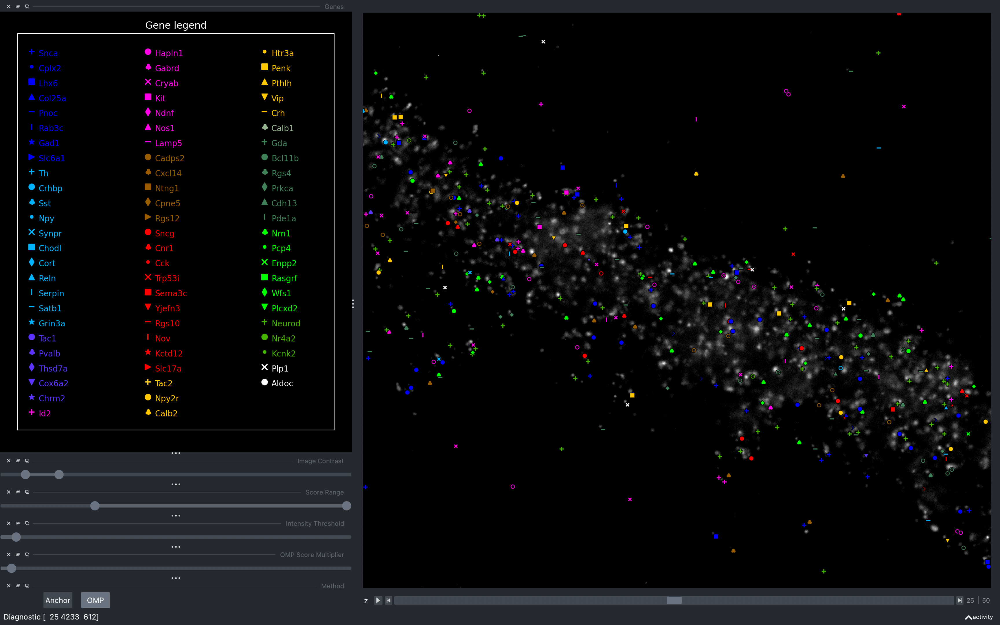
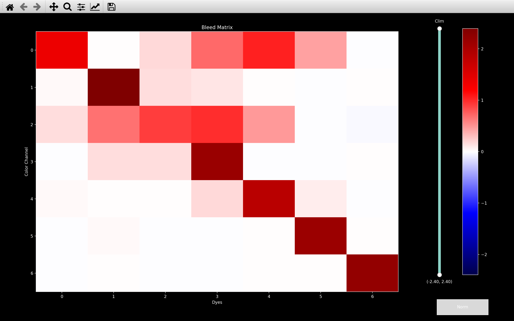
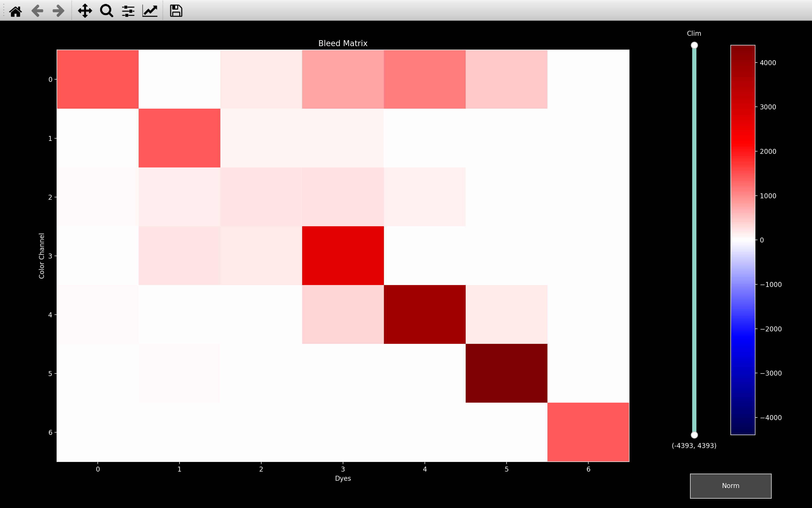
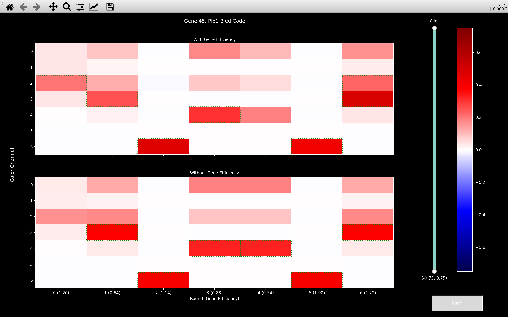
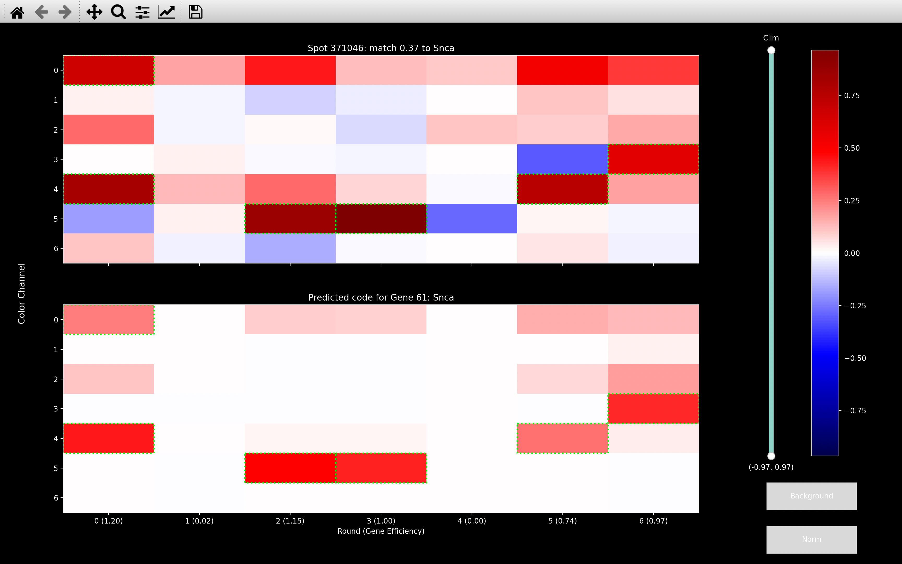
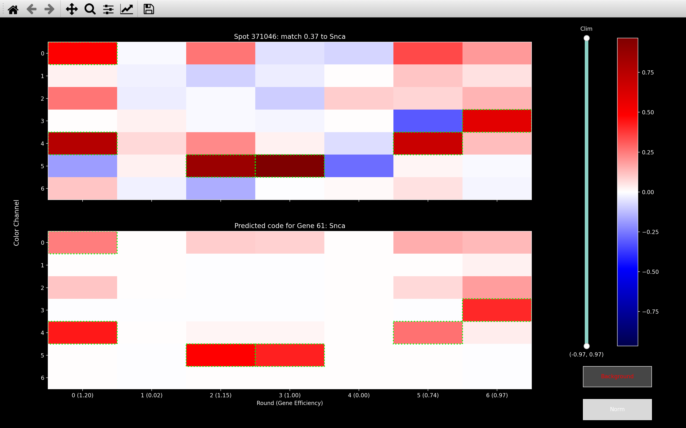
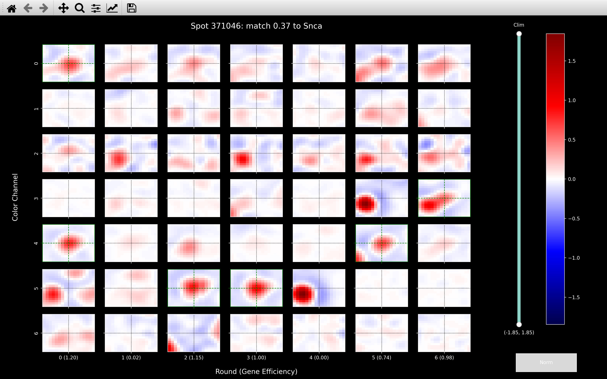
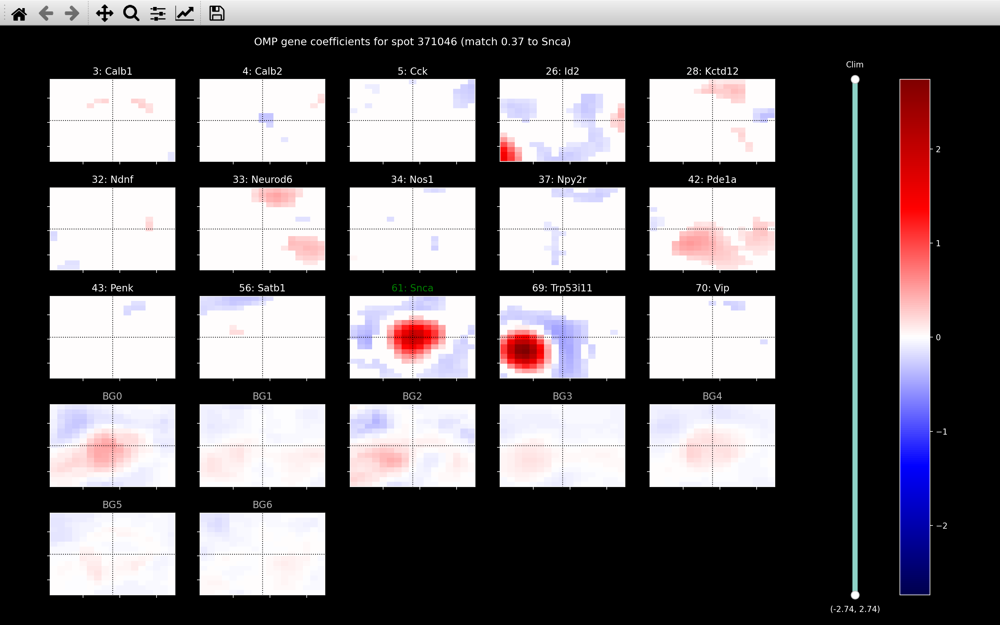
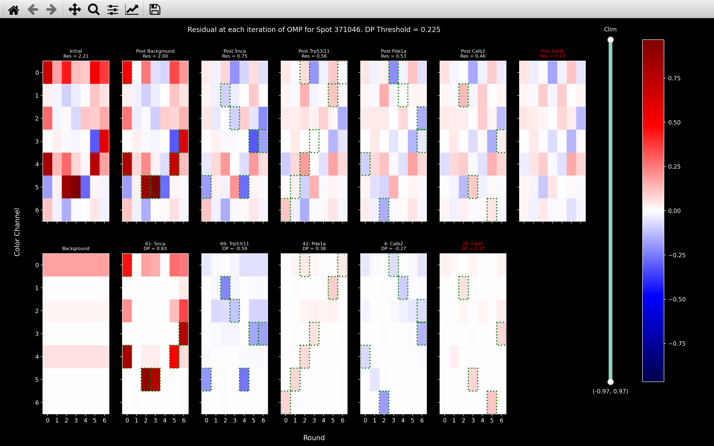

Viewing the results
Once the pipeline has completed the reference_spots step
such that the Notebook contains the call_spots and
ref_spots pages, the gene assignments of the spots found can be visualised
using coppafish.Viewer.
This can be opened via the command line or using a python script. It requires either the path to the config file (/Users/user/coppafish/experiment/settings.ini) or the path to the notebook file (/Users/user/coppafish/experiment/notebook.npz):
python -m coppafish /Users/user/coppafish/experiment/settings.ini -view
from coppafish import Notebook, Viewer
ini_file = '/Users/user/coppafish/experiment/settings.ini'
nb = Notebook(config_file=ini_file)
Viewer(nb)
from coppafish import Notebook, Viewer
nb_file = '/Users/user/coppafish/experiment/notebook.npz'
nb = Notebook(nb_file)
Viewer(nb)
This will then open the napari viewer which will show the spots with a marker indicating which gene they
were assigned to. If the Notebook contains the omp page, the spots plotted
will be those found with the OMP algorithm, otherwise it will show the
reference spots (those found on nb.basic_info.ref_round/nb.basic_info.ref_channel)
and their gene assignments found using call_reference_spots.
An example is shown below:

Markers not visible
When the napari viewer first opens, the markers are often not visible because it is so far zoomed out. After zooming in by scrolling with the mouse, they should show up.
pydevd Warning
When opening the napari viewer, a series of warnings, starting with
UserWarning: incompatible copy of pydevd already imported
pip uninstall debugpy
Background Image
By default, the spots will be plotted on top of the stitched DAPI image (config['file_names']['big_dapi_image'])
if it exists, otherwise there will not be a background image.
To use a particular background image, when calling Viewer a second argument needs to be given
(Viewer(nb, background_image). There are several options:
'dapi': Will useconfig['file_names']['big_dapi_image']if it exists, otherwise will be no background (default).'anchor': Will useconfig['file_names']['big_anchor_image']if it exists, otherwise will be no background.- Path to .npy or .npz file: An example would be
'/Users/user/coppafish/experiment/background_image.npz'. This file must contain an image with axis in the order z-y-x (y-x if 2D). - Numpy array: Can explicitly give the
[n_z x n_y x n_x]([n_y x n_x]in 2D) desired image.
If a 2D image is provided for a 3D dataset, then this image will be used as the background image for each z-plane.
Gene Markers
The color and marker used for each gene can be provided through a csv file e.g.
Viewer(nb, gene_marker_file='/Users/user/coppafish/experiment/gene_markers.csv')
This csv file must contain 6 columns with the following headers:
- GeneNames -
str, name of gene with first letter capital. - ColorR -
float, Rgb color for plotting. - ColorG -
float, rGb color for plotting. - ColorB -
float, rgB color for plotting. - napari_symbol -
str, symbol used to plot in napari. - mpl_symbol -
str, equivalent of napari symbol in matplotlib.
Only genes with names indicated in the GeneNames column will be shown in the viewer. If this file is not specified, then the default file will be used.
Sidebar
The sidebar on the left of the viewer includes various widgets which can change which spots are plotted.
Select Genes
- To remove a gene from the plot, click on it in the gene legend.
- To add a gene that has been removed, click on it again.
- To view only one gene, right-click on it.
- To go back to viewing all genes, right-click on a gene which is the only gene selected.
Image contrast
The image contrast slider controls the brightness of the background image.
Method
If the notebook contains the omp page, a pair of buttons labelled OMP and Anchor will appear at the bottom of the sidebar. Initially the OMP button is selected meaning the spots shown are those saved in the omp page. Pressing the Anchor button will change the spots shown to be those saved in the ref_spots page.
If the Notebook does not have the omp page, these buttons will not be present and the spots shown will be those saved in the ref_spots page.
Score Range
Only spots which pass a quality thresholding are shown in the viewer.
Spots are assigned a score between 0 and 1 (can be larger for ref_spots) which indicates the likelihood that the
gene assignment is legitimate.
When the viewer is first opened, only spots with score > config['thresholds']['score_omp']
(score > config['thresholds']['score_ref'] if no omp page in notebook) are shown
and the lower value of the score slider is set to this.
The slider can then be used to view only spots which satisfy:
slider_low_value < score < slider_high_value
Effect of changing Method on Score Range slider
The score computed for spots using the omp method, \(\gamma\), differs from that used
with the ref_spots method, \(\Delta\).
Thus, we keep a unique score range slider for each method so that when the method is changed using the buttons,
the score range slider values will also change to the last values used with that method.
Intensity Threshold
As well as a score, each spot has an intensity
value.
The quality thresholding also means
that only spots with intensity > intensity_thresh are shown in the viewer.
Initially, intensity_thresh will be set to config['thresholds']['intensity'] and the slider can be
used to change it.
Effect of changing Method on Intensity Threshold slider
The intensity is computed in the same way for OMP
spots and reference spots.
Thus the value of intensity_thresh will not change when the method is changed using the buttons.
OMP Score Multiplier
This is the \(\rho\) parameter used in the calculation of OMP score. It will not affect anything if the method is Anchor.
Diagnostics
There are a few diagnostic plots which can be called with keyboard shortcuts while the viewer is open.
i: Remove background image
The background image can be removed from the viewer by pressing the i key. Once it has been removed, it can be put back by pressing i again.
b: view_bleed_matrix
The bleed matrix computed for the experiment can be shown by pressing b. This will then show the expected intensity of each dye in each channel. An example is shown below.


Norm Button
This plot as well as the view_bled_codes, view_codes and view_spot plots below have a Norm button.
When these plots open the colorbar gives the intensity after normalisation has been applied to equalise the intensity between color channels i.e. weaker channels are boosted.
To remove this normalisation, press the Norm button (Norm will go red).
The range of the colorbar will then change from approximately -1 to 1 to approximately -1000 to 1000.
This is then then the intensity that is read off from the filtered images saved as .npy files
in config['file_names']['tile_dir'].
You can see above that in the un-normalised bleed matrix, channel 2 appears much weaker than it does in the normalised version.
In both the call_reference_spots and OMP sections of the pipeline, spots are assigned to genes by comparing the
spot_color to the bled_code of each gene. This is done using the normalised spot_color (with
background removed) and normalised bled_codes.
This plot is useful to check that the dyes can be distinguished. I.e. that each column above (in the normalised version) is relatively unique. This is required so that genes can be distinguished based on their barcodes which indicate which dye each gene should appear with in each round.
g: view_bled_codes
The bled_code for each gene can be shown by pressing g. This shows two plots for each gene as shown below
for Plp1:

The bottom plot shows the predicted code for the gene based on its barcode
and the bleed_matrix.
For this experiment, Plp1 has the barcode 2364463 meaning the column for round 0 in the bled_code
is the column for dye 2 in the bleed_matrix, the column for round 1 above is the column for dye 3 in
the bleed_matrix etc. These bled_codes are saved as
nb.call_spots.bled_codes in the
call_reference_spots section of the pipeline.
The top plot shows the bled_code incorporating the calculated
gene_efficiency.
The gene_efficiency is the expected strength of a gene in each round and is given in
brackets in the x-tick labels. These bled_codes are saved as
nb.call_spots.bled_codes_ge in the
call_reference_spots section of the pipeline. It is these bled_codes
which are compared to spot_colors when assigning each spot to a particular gene.
You can view other gene codes by scrolling up and down with the mouse when this plot is open.
A green rectangle is added to each round/channel where the bled_code value is greater than 0.2. This indicates
rounds/channels where the gene is particularly strong. It is also done in view_codes and
view_omp_fit.
Shift-g: gene_counts
This plot indicates the number of reference spots assigned to each gene
which also have nb.call_spots.score > score_thresh and nb.call_spots.intensity > intensity_thresh.
The initial values of score_thresh and intensity_thresh used will be the current slider values.
If the Notebook has the OMP page, then it will also show
the number of OMP spots assigned to each gene which also have \(\gamma_s >\) omp_score_thresh and
nb.omp.intensity > intensity_thresh. The initial values of omp_score_thresh, omp_score_multiplier and
intensity_thresh used will be the current slider values.
h: histogram_score
This plot shows the histogram of the score assigned to each spot
for the current method. If the current method is OMP,
the initial value of omp_score_multiplier will be the current slider value.
Shift-h: histogram_2d_score
This plot shows the bivariate histogram to see the correlation
between the omp spot score, \(\gamma_s\) and the dot product score \(\Delta_s\) for spots detected with the
OMP algorithm. The initial value of omp_score_multiplier will be the current slider value.
k: view_scaled_k_means
This plot shows how the bleed_matrix was computed.
space: Change to select mode
To run the diagnostics listed below, you need to change to select mode. This is done by pressing space-bar. In select mode, you won't be able to pan or zoom. To change back to pan/zoom mode, press space-bar again. On pressing space-bar, it should tell you in the bottom right corner of the viewer which mode you are in.
When clicking on a spot in select mode, it should tell you in the bottom left corner, the spot_no of that spot and to which gene it was assigned.
c: view_codes
The spot_color for a particular spot can be compared to the bled_code (including gene_efficiency)
of the gene it was assigned to by pressing c after clicking on the
spot in select mode:


Pressing the Background button (Background will turn red), shows what the spot_color looks like after the
background genes have been removed.
The spot_color and bled_code that are used when computing the
dot product score are shown when the
Background button is red but the Norm button is white.
The subsequent plots all show the same spot as used here.
s: view_spot
The intensity in the neighbourhood of a particular spot in each round/channel can be viewed by pressing s after clicking on the spot in select mode:

For a 3D experiment, this will only show the neighbourhood on the z-plane where the spot was found. This is also
the case for view_omp.
The cross-hair is in green in each round/channel where the bled_code (with gene_efficiency)
of the predicted gene (Snca here) is greater than 0.2.
d: view_score
This plot indicates how the dot product score, \(\Delta_s\), was computed for a particular spot.
Shift-i: view_intensity
This plot shows how the intensity, \(\chi_s\) was computed for a particular spot.
o: view_omp
The omp coefficients of all genes in neighbourhood of a particular spot can be viewed by pressing o after clicking on the spot in select mode:

If a gene is not plotted, it means hardly any pixels had a non-zero coefficient for that gene.
The gene indicated by BG2 is the background code for channel 2, which is equal to 1 in all rounds of channel 2 and 0 otherwise. It is then normalised to have an L2 norm of 1. E.g. for an experiment with 7 rounds and 7 channels, the \(n_{rounds}\times n_{channels}\) code would be:
array([[0. , 0. , 0.378, 0. , 0. , 0. , 0. ],
[0. , 0. , 0.378, 0. , 0. , 0. , 0. ],
[0. , 0. , 0.378, 0. , 0. , 0. , 0. ],
[0. , 0. , 0.378, 0. , 0. , 0. , 0. ],
[0. , 0. , 0.378, 0. , 0. , 0. , 0. ],
[0. , 0. , 0.378, 0. , 0. , 0. , 0. ],
[0. , 0. , 0.378, 0. , 0. , 0. , 0. ]])
The background codes are saved as
nb.call_spots.background_codes in the
call_reference_spots section of the pipeline. Each background vector
is always fitted to each pixel by the omp algorithm, so they will always be shown.
OMP Diagnostics on Reference Spots
The functions view_omp, view_omp_fit and
view_omp_score can also be run for
reference spots by pressing the relavent key once a spot has been selected in the Anchor
method.
The view_omp_score function requires the Notebook to have the
OMP page but the other two do not.
shift-o: view_omp_fit
The genes fitted to a particular spot at each stage of the OMP algorithm can be viewed by pressing shift-o after clicking on the spot in select mode:

The image shown at column \(i\) of the first row is the residual spot_color before the gene shown
at the column \(i\) of the second row has been fitted.
The image shown at column \(i+1\) of the first row is the residual spot_color
after the gene at column \(i\) of the second row has been removed.
The image shown at column \(i\) of the second row is the gene that best explains the residual spot_color
shown at column \(i\) of the first row.
The second row shows the bled_code (with gene_efficiency) for the gene multiplied by the coefficient found by
the OMP algorithm for that gene at that iteration.
The first plot of the second row shows the sum of the contribution of all background vectors. They are
combined because there is no overlap between the different background_codes.
The OMP algorithm stops when the absolute value of the dot_product_score
(DP in the title of images in the second row) to the best gene drops below the DP Threshold indicated in
the title (0.225 here, this value is config['omp']['dp_thresh']).
The gene shown in red is the first gene with a dot_product_score less than this and won't be fitted.
Res in the title of images in the first row gives the L2 norm of the residual spot_color at that iteration
of the OMP algorithm. I.e. we expect this to decrease as the omp algorithm proceeds.
If you right-click on a column,
it will run the view_score function to indicate how the dot product was calculated for that gene on
that iteration.
Shift-s: view_omp_score
This shows how the OMP score, \(\gamma_s\), was computed for a particular spot.
The initial value of omp_score_multiplier will be the current slider value.